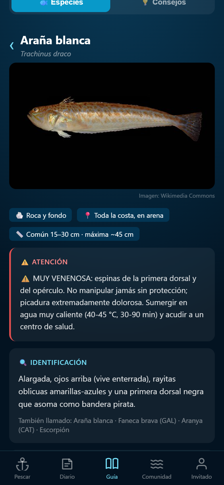

El pez más venenoso
de Europa vive donde te bañas
Es la araña o faneca brava: enterrada en la arena, su picadura es la lesión de pesca más común del verano. Aprende a identificarla antes de pisarla.

Avisos de especies peligrosas
Qué hacer ante una picadura
Enciclopedia de 70 especies
Identifícala en la Guía de MiPesca
Gratis y sin cuenta · avisos, cebos, técnicas y cocina
Link en la bio ↗